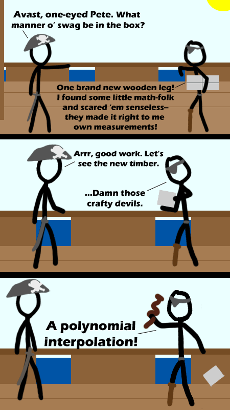

Comic JK 348
When I Feel Like It
⇤
<
?
>
⇥

⇤
<
?
>
⇥
Forum
.
RSS
.
Digg
.
Facebook
.
Reddit
.
Twitter
.
Stumbleupon
Enter your thoughts on number 348 here. Please, no spamming, trolling, or phreaking. oh ffs is someone deleting again? Are these the oil company pirates? >I like how that question makes perfect sense on this comic. Pirates < Ninjas! --Evan,i just want to see what happens if i type here a/s/l :D ? ---Pirates SUCK MORE! ----Wait, is this a pro-ninja or a pro-pirate argument? ---- McNinjas > Japenese ninjas > Pirates > Naruto Ninjas McNinjas FTW! >Linjas FTW! >>Ponies > Ninjas > Pirates < FSM Looks more like a Fourier approximation to me, with all those oscillations. But I'll take your word that it's a polynomial; I can't see it very well. They really wanted to get it right, so they used a 10 degree polynomial. Unfortunately, the pirate had specified some points of the shape, but not the tangents at the points. >Ha! Something I would do! a classic case of over fitting...instead of fitting over